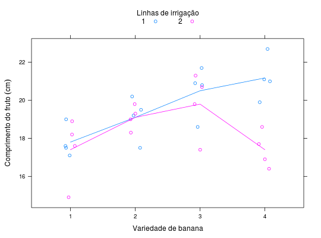

Experimento em parcelas subdivididas que estudou o comprimento de frutos de variedades de banana em função do nível de irrigação fornecido.
Um data.frame com 32 observações e 4 variáveis, em que
variedirrigblococompCosta (2013), Tabela 8, pág. 76.
library(lattice) data(CostaTb8)#> Warning: data set ‘CostaTb8’ not foundstr(CostaTb8)#> 'data.frame': 32 obs. of 4 variables: #> $ varied: Factor w/ 4 levels "1","2","3","4": 1 1 1 1 1 1 1 1 2 2 ... #> $ irrig : num 1 1 1 1 2 2 2 2 1 1 ... #> $ bloco : Factor w/ 4 levels "1","2","3","4": 1 2 3 4 1 2 3 4 1 2 ... #> $ comp : num 19 17.1 17.5 17.6 18.9 17.6 14.9 18.2 19.2 19.5 ...ftable(with(CostaTb8, tapply(comp, list(varied = varied, irrig = irrig, bloco = bloco), FUN = mean)))#> bloco 1 2 3 4 #> varied irrig #> 1 1 19.0 17.1 17.5 17.6 #> 2 18.9 17.6 14.9 18.2 #> 2 1 19.2 19.5 17.5 20.2 #> 2 19.8 18.3 19.3 19.0 #> 3 1 20.8 20.9 18.6 21.7 #> 2 20.7 21.3 17.4 19.8 #> 4 1 21.1 22.7 21.0 19.9 #> 2 16.9 17.7 16.4 18.6xyplot(comp ~ varied, groups = irrig, data = CostaTb8, as.table = TRUE, layout = c(NA, 1), jitter.x = TRUE, type = c("p", "a"), auto.key = list(title = "Linhas de irrigação", cex.title = 1, columns = 2), xlab = "Variedade de banana", ylab = expression("Comprimento do fruto"~(cm)))